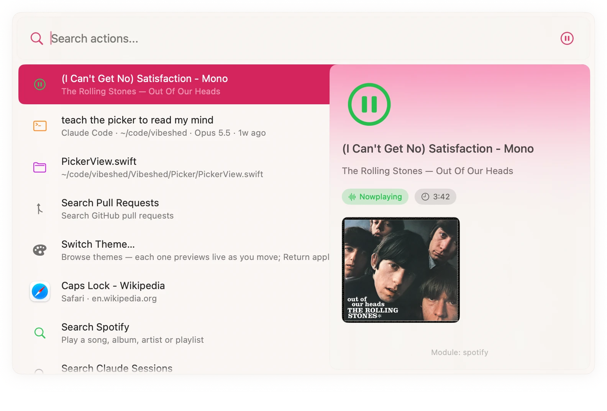
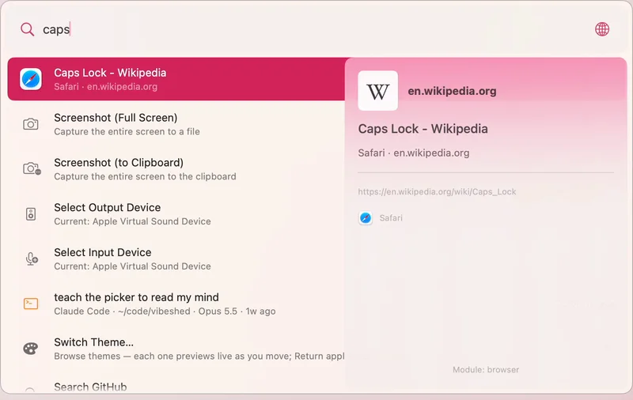
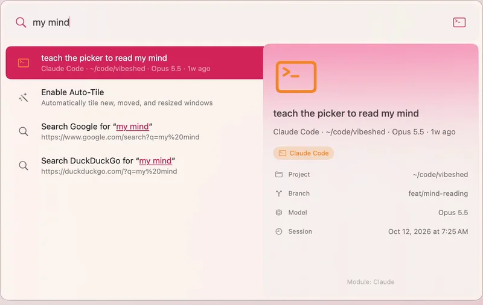
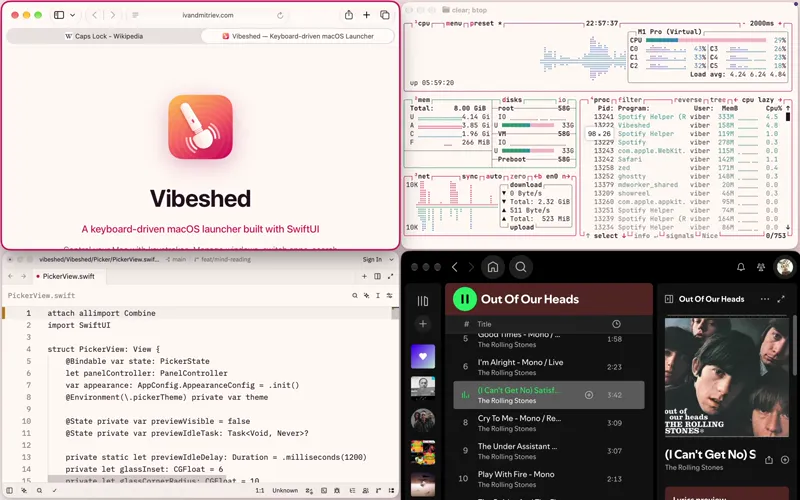
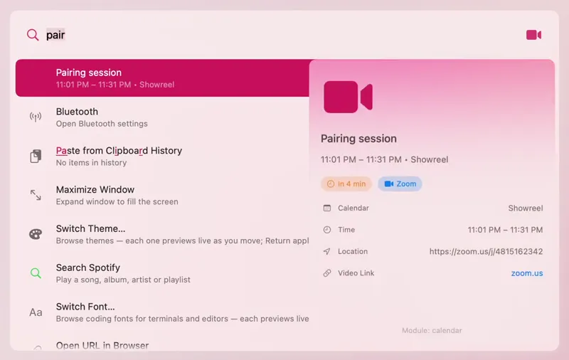
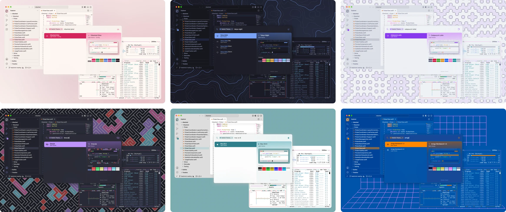

After hours · Free · open source · Apple silicon only
Satisfaction in a few keystrokes.
A keyboard launcher for macOS that satisfies all your desires: apps, windows, browser tabs, Claude Code sessions, music and 73 themes, all one Caps Lock away.
brew install --cask idmitriev/tap/vibeshed
Apple silicon only · macOS 14 or later · signed, notarized and discreet · 4.7 MB · no account

- 36 modules
- 73 themes
- 45 wallpaper styles
- 0 telemetry
Features
57 seconds, no mouse.
Search, themes and windows, recorded in one take on a real Mac. It loops, because once is never enough.
1 of 3
Whatever you’re into.
Apps, tracks, tabs, meetings, pull requests and AI sessions, from one search bar. Each with a preview.
A 57-second loop of Vibeshed on an empty Mac desktop. Search finds Spotify, a Safari tab, a meeting, a Claude Code session and a pull request, each with a preview. Then the windows come back and seven themes repaint the terminal, editor, wallpaper and picker. Finally the windows are tiled, maximized, put in a grid and minimized, leaving the empty desktop again.
-

Whatever you’re into.
Apps, windows, Safari and Chrome tabs, bookmarks, and VS Code, JetBrains and Zed projects. It learns what you reach for.
⇪Space
caps -

Your agents are waiting.
Resume Claude Code, Claude Desktop, Codex and OpenCode sessions by project and branch, and jump straight to the one that needs you.
my mind -

Try every position.
Caps Lock + W A S D cycles a window’s size against each edge. Arrows move focus. M maximizes, and M again puts it back.
⇪WASDM
-

Never late again.
Upcoming events with one-key Zoom and Meet joins. Meeting Prep hides the distractions before you share your screen.
pair -
Music on cue.
Search Spotify for songs, albums, artists and playlists and play them, no API setup. Volume, output devices and media keys too.
spot -
The rest, built in.
Clipboard history, math and currency, timers, emoji, Homebrew, GitHub pull requests and Apple Notes. 36 modules, each loaded only when you ask for it.
2+2brew
All 36 modules
Each one loads only when its section is in your config.
- Window
- Resize, move, tile, cycle, maximize/restore, focus windows, focus border
- Tiling
- Per-display grid tiling, auto-tile, directional moves
- Application
- Launch, focus, quit applications
- Menu
- Search and click the frontmost app's menu bar items
- Processes
- List and kill running processes
- Performance
- CPU, memory, disk and network activity with history charts; opens Activity Monitor on the matching tab
- Browser
- Search/focus/close tabs in Safari and Chromium browsers
- Bookmark
- Browser bookmarks and most-visited URLs
- Clipboard
- Clipboard history with search, paste, and persistence
- Audio
- Volume, mute, device selection, media key control
- System
- Lock, sleep, restart, shutdown, appearance, screenshots
- Settings
- Open macOS System Settings panes
- Spotify
- Search and play songs, albums, artists, playlists; playback control
- GitHub
- Search repos, issues, PRs; view notifications
- VSCode
- Search and open recent projects
- JetBrains
- Search and open IDE projects
- ITerm
- Session listing, command execution, new tabs
- Ghostty
- Focus open terminals, new windows/tabs, quick commands, config reload (Ghostty 1.3+)
- Terminal
- New Terminal.app windows, Run Command, quick commands
- Claude
- Resume Claude Code/Desktop sessions, start new ones, jump to sessions awaiting input
- Codex
- Resume Codex threads with project/branch/model context, start new sessions
- OpenCode
- Resume OpenCode sessions in a terminal with project/model context, start new sessions
- Zed
- Search and open recent workspaces
- Homebrew
- Search, install, uninstall, upgrade packages and casks
- Zoom
- Join meetings, start personal meeting, configured shortcuts
- Telegram
- Quick-open configured chats and groups
- Calendar
- Upcoming events, join Zoom/Meet links
- Notes
- Search Apple Notes by title or text, open them, start new ones
- MeetingPrep
- Prepare workspace for meetings
- Timer
- Set timers and reminders
- Math
- Arithmetic, unit/currency conversion
- Web Search
- Search the web when nothing else matches
- Emoji
- Search and copy/paste emoji
- Theme
- Palette themes and coding fonts applied across macOS and apps, with live preview
- Wallpaper
- Search Wallhaven, Unsplash and the Rijksmuseum, Met and Art Institute of Chicago collections, or pick at random; set the result as the wallpaper
- Self
- Open config, reload modules, view logs, quit
Themes
Comes in 73 colors.
One palette across macOS, your wallpaper, Ghostty, iTerm, VS Code, Zed, Neovim and Claude Code. Preview live. Esc is the safe word.

Press T and this page tries one on. ⇧T goes back, Esc takes it off. Or pick one:
Wearing: Vibeshed, the site’s own palette.
Config
Strictly text.
One YAML file, reloaded the moment you save. No settings window, on purpose.
- Hot reload. Save the file and the change is live; new modules load on the spot.
vibeshed://URLs. Anything in the picker can be run from a script, a shortcut or a link.- Per-app remaps. Bind keys for one app only, mouse buttons included.
- Aliases. Your own names and keywords for any action.
# ~/.config/vibeshed/config.yaml
keybindings:
- combo: "capslock+space"
action: "app/togglePicker"
- combo: "cmd+,"
remap: "ctrl+shift+tab" # previous tab…
app: "com.apple.Safari" # …only in Safari
modules:
theme:
wallpaperStyle: auto # each theme brings its ownPrinciples
House rules.
Whisper-quiet.
Menu bar only, no Dock icon, no Electron.
Discreet by design.
No telemetry; your history stays on your Mac.
Native.
Swift and SwiftUI, with one runtime dependency.
Free.
MIT-licensed. No store, no paid tier, no account.
What it won’t do
- No extension store or plugin marketplace: modules ship in the app.
- No AI chat inside the picker, no cloud sync, no phone companion.
- No settings window. If YAML is a dealbreaker, this is the wrong tool.
- No Intel, Linux or Windows. Apple silicon Macs only.
FAQ
Questions, answered.
Why does it ask for Accessibility and Input Monitoring?
Accessibility lets Vibeshed move, resize and focus windows and read app menus. Input Monitoring lets it notice Caps Lock being held, so Caps Lock can work as a modifier. Some modules ask for more: Automation to talk to apps like Safari and Spotify, and Screen Recording for live window previews. A welcome window asks for each one in turn, and only for the modules you have turned on.
Does it phone home?
No. There is no telemetry, analytics or crash reporting in the app. It goes online only when you ask it to: currency rates for conversions, and Spotify, GitHub and wallpaper searches. Your history and usage stay on disk on your Mac.
Is it really free?
Yes. It’s MIT-licensed, with no paid tier, no account and no features held back. Tips are optional and buy nothing extra.
Does it run on Intel Macs?
No. Vibeshed runs on Apple silicon Macs (M1 or later) with macOS 14 Sonoma or later. The release is an Apple silicon build, and Homebrew won’t install it on Intel.
How do I uninstall it?
brew uninstall --zap --cask vibeshed. No hard feelings.
Without Homebrew: quit it from the menu bar, move Vibeshed from Applications to the Bin, and delete ~/.config/vibeshed.
How is it different from Raycast or Alfred?
It’s smaller and stricter: free and open source, configured in one text file, with its modules built in rather than sold or installed from a store. It also manages windows and themes itself. If you want an extension store, AI chat or cloud sync, Raycast is the better pick.
Is the icon what I think it is?
It’s a magic wand. Draw your own conclusions.
Will it get me in trouble at work?
It’s MIT-licensed, signed, notarized and sends nothing anywhere. The icon stays between you and IT.
Support
Free, no strings attached.
Vibeshed costs nothing and always will: no store, no paid tier, no account. It’s made by one person, Ivan, after hours. Tips pay the $99 a year Apple charges to sign and notarize every release, then buy time for new tricks.
Where tips go, in order
- The $99 a year Apple Developer membership that signs and notarizes every release.
- The vibeshed.dev domain.
- Test hardware.
- Time for new tricks.
Features will never be paywalled.
Tip in USDC
USDC on Base, Polygon, Arbitrum, Ethereum or Solana. A dollar stablecoin, so a $5 tip stays $5, and on these networks it costs you under a cent to send.
BasePolygonArbitrumEthereum
One address for all four networks:
0x9Ee642a541b96B85D4D4e5f17333b3121fD1E55A
Solana
Solana only:
FFW7o79fpujjarCn87gorHcZzUzjzBpF6h4zfJDGpGEH
Pick the network named here, and check the whole address, not just its ends. USDC only, on these networks only.
These addresses are signed in DONATE.md in the repo. We never post addresses in issues or messages, and we don’t issue or endorse any token.
Free ways to help
- Star the repo or tell a friend.
- Report a bug or ask for a feature.
- Write a module or a theme.
Every desire, one keystroke away.
Download for Mac 0.12.0 Send to my Mac
Apple silicon only · macOS 14 or later · free and open source